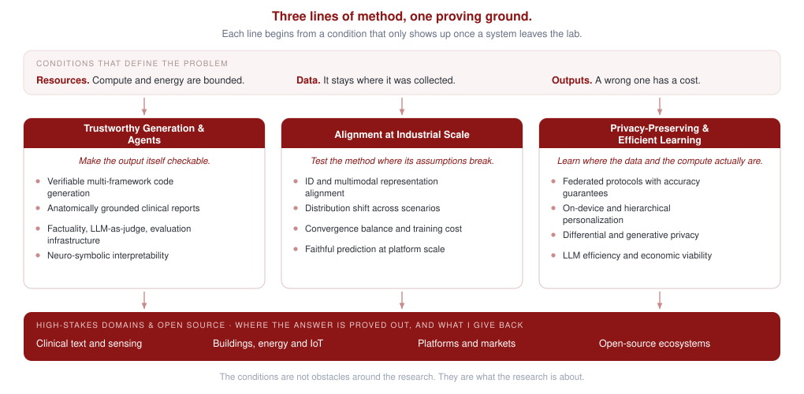

Research
Modern AI models do remarkably well on benchmarks and then struggle in the places we need them most. Hospitals cannot ship their data to a datacenter. Edge devices cannot run a frontier model. A generated report or a generated program is only useful if someone can check it. I follow one system from the moment it produces something to the moment someone has to depend on it, and four questions mark that path. Can the output be checked? Does the method still hold at the scale where its assumptions break? Can it learn and run where the data and the compute actually are? And does it change an outcome somewhere a mistake is expensive? The questions are ordered, because each one only becomes urgent once the one before it has an answer. I came to this view through seven years of building learning systems for cyber-physical environments, and it now shapes how I build generative models, alignment methods, and federated learning systems.

Trustworthy Generation & Agents
If a model writes the code, who checks the code?
My answer is to make the output itself verifiable, and I start where verification is mechanical. In UI2Code generation the test is concrete: generated front-end code has to compile, render, and behave the same across frameworks. DCM mines the deterministic components a page is built from and MulFCoder coordinates framework-conditioned agents to assemble them (both ICML 2026), SynFix (Findings of ACL 2025) repairs the dependencies a repository-level edit breaks, and ongoing work carries the line into phase-wise tuning, executable multi-framework generation, and uncertainty-guided repair. Code is the honest case, because a compiler is an evaluator nobody can argue with.
Most domains have no compiler, so the evaluator has to be built. S2D-Align (AAAI 2026) grounds radiology report generation in anatomical structure, so a generated finding can be traced back to the region it came from. Semantic bootstrapping with Tsetlin machines (Findings of ACL 2026) keeps a classifier readable by construction rather than explained after the fact. And where neither is available I measure trust directly, from culturally aware harm detection (WWW 2026) to the factuality of medical LLMs running on edge hardware (EMNLP 2025 Industry, Best Paper Nomination). Those two are the hinge into the clinical work further down this page: the standard that decides the question is not a benchmark score, it is a clinician reading the output.
code generation & agents · clinical text · factuality & evaluation · LLM-as-judge · neuro-symbolic interpretability
Checkable output is one thing on a benchmark and another inside a platform whose distribution moves every day.
Alignment at Large Scale
Do alignment methods hold up at the scale of a live platform?
A method that behaves on a benchmark can still fall apart on a platform, so I test mine inside production recommender systems, where the failures are mechanical rather than conceptual. ID embeddings and multimodal representations converge at different speeds, which AGM (NeurIPS 2025) handles with adaptive gradient masking and two KDD 2025 papers handle by aligning and anchoring the two families. Behaviour drifts across scenarios and markets, which distribution-aware re-representation (SIGIR 2026) is built for. And every retraining run costs money that someone has to justify.
The question underneath is the one from the previous theme: whether the output can be trusted, not only whether it scores well. Prototype-guided projection (ACM MM 2025, Oral) carries what one domain learned into another without distorting either, TimeSieve asks for forecasts that are faithful rather than merely accurate, watch-time calibration (ICML 2025) puts an honest confidence on a prediction that decides what a platform's entire audience sees, and EGGesture (ACM MM 2024) applies the same discipline to multimodal generation. Running at this scale is the strongest evidence I have that a method is real. It also assumes something these platforms have and almost none of my other settings do: every record in one place.
multimodal alignment · recommender systems · distribution shift · faithfulness & calibration · large-scale deployment
Scale assumes the data can be gathered in one place. In the settings I care about it cannot.
Privacy-Preserving & Efficient Learning
What can a model learn when data cannot leave the device and compute is scarce?
This question has run through my work since my Ph.D., and it started with machines rather than models. In cloud datacenters I turned task failure prediction (IEEE TSC 2020) and renewable energy scheduling (IPDPS 2020) into learning problems, which is where I learned to treat a resource budget as part of the objective instead of an afterthought. Federated learning moved the same instinct into buildings and homes, where the constraint is ownership rather than compute: Atlas (ICCPS 2025) writes the accuracy cost of privacy into the federated protocol itself, PFDRL (ICPP 2023) personalizes control for residential energy, and H-FedSN (NPJ Artificial Intelligence 2026) makes hierarchical federated learning work across devices that are nothing alike. PrivateHub, a manuscript now under review, asks the next version of the question: what a generative model should synthesize and what it should hide.
Foundation models brought the constraint back in a new form, and my answer serves the first theme rather than sitting beside it. GRO-RAG (ICLR 2026) re-ranks retrieved evidence by how much it actually contributes to the generated answer, which saves compute and cuts hallucination with one mechanism; HOLA (EMNLP 2025 Industry) fits inference into a fixed budget; and an industry study (ACL 2026 Industry) asks whether a deployment pencils out at all once energy, latency, and serving cost are counted. Efficiency, privacy, and trust are not three separate agendas. They are three prices you pay in the same place, and that place is a domain.
federated learning · on-device personalization · differential privacy · LLM efficiency & economics · cloud systems
These three questions stop being separate the moment a system enters a hospital, a building, or a market.
AI for High-Stakes Domains & Open Source
Where does deployable AI matter most?
Healthcare is where the first theme gets graded. Beyond report generation and clinical LLM evaluation, my CHIL 2023 oral paper on mobile sensing for end-stage renal disease detects fluid overload from ordinary phone signals, and FedMetaMed (BIBM 2024) personalizes medication across hospitals that cannot pool their records, which is the third theme applied to the first. Two more clinically grounded generation papers are under review.
Buildings, energy, and IoT are where I started, and where the constraints are physical. BLE Can See (IPSN 2021) reads occupancy from radio signals already in the room, ScreenSense (BuildSys 2024, Best Paper Candidate) recovers screen activity in real homes and offices, and at Stanford the line continues into LLM-driven Scan-to-BIM reconstruction for the built environment.
Finance and open source are where the work leaves my hands. I am a core contributor to the FinRL ecosystem (ICAIF 2021), to FinRL-Meta (NeurIPS 2022 Datasets and Benchmarks), and I help organize the FinRL Contest at ACM ICAIF, now in its third year. That work comes from the same instinct as the evaluation papers in the first theme: the most useful thing you can hand a field is often the environment everyone tests in. Across all three domains the closing question is the one this page opened with, asked by someone who has to live with the answer.
Open-source projects
healthcare AI · smart buildings & energy · financial RL · open source
Future directions
I am working toward learning systems that carry their own guarantees into deployment: generative agents that ship with evaluators and repair loops, federated foundation models that personalize on the device where the data lives, and alignment pipelines whose behavior is verified at large scale before anyone depends on them. Healthcare and the built environment are where I plan to prove these systems out first.
A detailed research statement is available upon request.